1.2.3 RCP (Reality Co-Processor)
The RCP has two processors (RSP and RDP) and I/O interfaces (VI, AI, PI, and SI). The RCP is the most important component of the N64 hardware system as shown in the following illustration. All data passes through the RCP, and the RCP serves as a memory controller for the CPU.
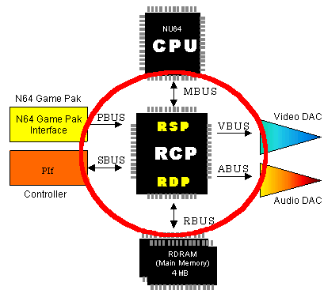
The following illustration shows the RCP process blocks:
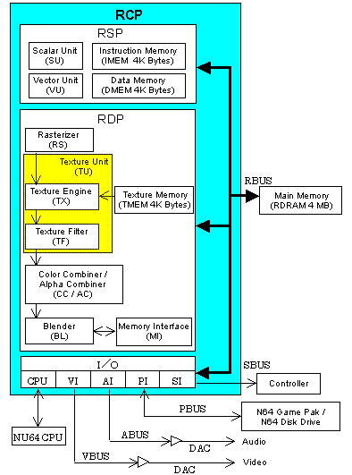
RSP (Reality Signal Processor)
The RSP executes graphics and audio tasks. It works based on microcode.
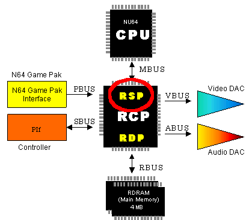
RSP Process Units
The following illustration shows the RSP process units:
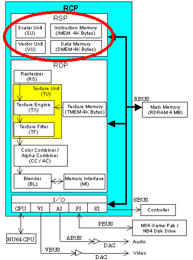
- The Scalar Unit (SU) uses a subset of R4000 instructions for execution.
- The Vector Unit (VU) has eight pieces of 16-bit product-sum operation mechanisms.
- Instruction Memory (IMEM) is the memory that stores microcode.
- Data memory (DMEM) is the internal working memory for the RSP microcode.
Graphics Processes Executed by the RSP
Most of the processes provided by the RSP are executed when vertex data is loaded into the vertex cache. The following are the main processes:
- Geometric transformation: This is necessary when three-dimensional objects move or must be scaled. The RSP does all necessary geometric transformations as needed. The RSP uses the 32-bit fixed-point vertex calculations to perform these transformations.
- Clipping: The clipping process cuts off polygons and pieces of polygons that are out of view of the screen as demonstrated in this illustration:
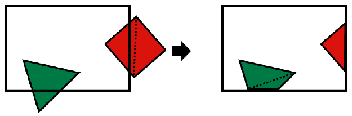
- Culling:
The culling process culls data that is not needed from the graphics pipeline. For example, data to draw the back of an object is unnecessary because it cannot be seen, so it is culled. The N64 supports two types of culling:
- Back-face culling to cull the unseen back of objects as demonstrated in this illustration:
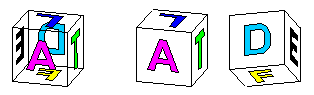
- Volume culling to cull items from the display list that draw objects that lie completely outside the current visual field as demonstrated in this illustration:
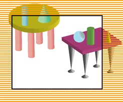
- Lighting calculations: to calculate lighting.
Audio Processes Executed by the RSP
The RSP processes waveform synthesis by using ABI (Audio Binary Interface) commands.
RDP (Reality Display Processor)
The RDP processes the display list created by the RSP and CPU to create the graphics data.
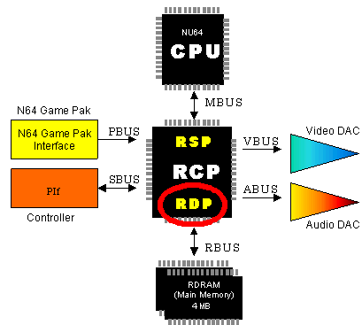
The RDP works only with graphics; it does nothing with audio. In other words, the RDP draws the graphics in the frame buffer and processes several drawing-related operations.
RDP Process Units
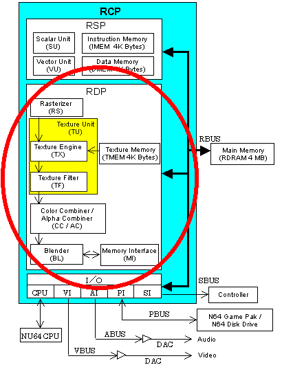
- The Rasterizer (RS) changes triangles and rectangles into pixels
- The Texture Engine (TX) provides sampling for texels (picture elements) by using TMEM (Texture Memory).
- The Texture Filter (TF) provides filtering for texels created by TX.
- The Color Combiner/Alpha Combiner (CC/AC) combines two colors of pixels created by RS and texels created by TF and interpolates between these two colors.
- The Blender (BL) blends the pixel color set from CC, the color in the frame buffer, the fog color, and so on. It draws the resulting color into the frame buffer. At this time, it can also provide Z-buffering for the first part of the anti-aliasing process.
- The Memory Interface (MI) processes pixel information in the frame buffer including read, modify, and write operations.
RDP Drawing Cycle Modes
The RDP has four main configurations where all the individual process units in the pipeline work together to generate pixels. These main configurations are called "cycle modes" because they indicate how many pixels are generated per cycle. The RDP has the following four cycle modes:
- Fill mode (FILL):
In FILL mode, the RDP writes pixels set in the fill color register. Four pixels in 16-bit frame buffer mode and two pixels in 32-bit frame buffer mode are writter per cycle.
- Copy mode (COPY):
In COPY mode, the RDP transfers the pixels in TMEM to the frame buffer. Four 16-bit pixels or two 32-bit pixels are copied per cycle.
- One-cycle mode (1CYCLE):
In one-cycle mode, the RDP uses each process in the RDP pipeline once to write a pixel per cycle.
- Two-cycle mode (2CYCLE):
In two-cycle mode, the RDP uses each process in the RDP pipeline twice, except the RS (rasterizer), to write one pixel per two cycles.
VI (Video Interface)
The VI reads data from the frame buffer using a fixed time interval, and sends it to the DA (digital-to-analog) converter (video DAC) to produce the video output. The following illustrations show the VI components and process units:
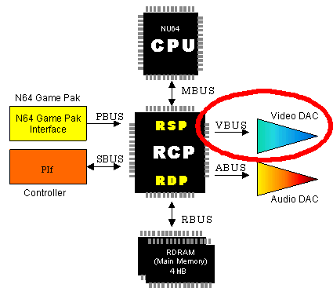
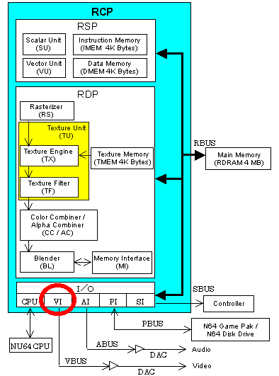
AI (Audio Interface)
The AI reads data from the audio buffer using a fixed time interval, and sends it to the DA (digital-to-analog) converter (audio DAC) to produce the sound output. The following illustrations show the AI components and process units:

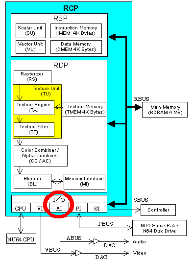
Nintendo® Confidential
Copyright © 1999
Nintendo of America Inc. All Rights Reserved
Nintendo and N64 are registered trademarks of Nintendo
Last Updated March, 1999